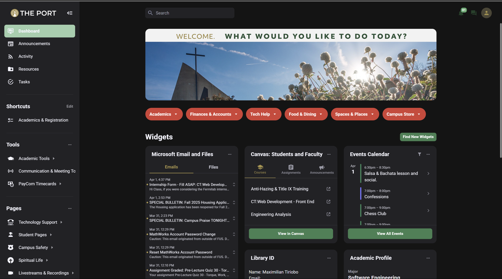
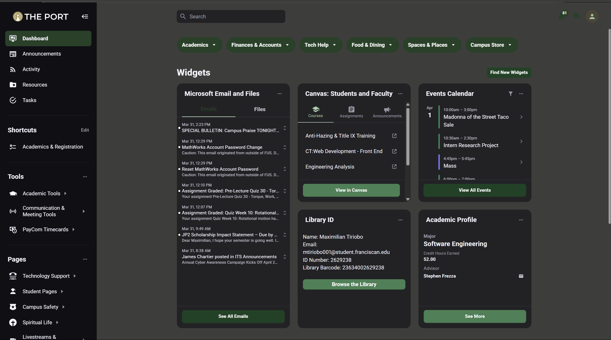
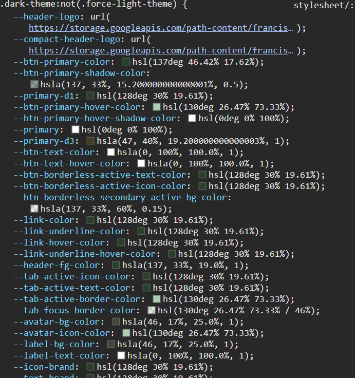

<link rel="stylesheet" href="Edited_Port.css">
<main>
    <title>web page 1</title>
    <body>
        <div class="creators" id="creators">
            <header>
                <h3>Created by Maximilian Tiriobo</h3>
            </header>
        </div>

        <h1>Webpage Before Edit </h1>
        
        <br>
        <h1>Webpage After Edit</h1>
        
        <p>For the 60, 30, 10 rule, I decided to keep black the primary color, 
            <br>at least on dark mode, and Green the 30, secondary color because it is the 
            <br>color of our school. lastly, I made white the text, so it can stand out and be readable against the black.
        </p>
        <p>
            Secondly, I changed the color of the buttons from red, it just out expecially against the green. 
        </p>
        <p>
            Lastly, I took out the top image to create a more organized and sleek look.
        </p>
        <h1>Code Sample</h1>
        <h2>made the text on the left bar's color in theme with teh rest of the page.</h2>
        


    </body>
</main>